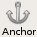
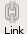

To create a link within the same page, for example a link that the
reader can use to
jump from one section to another, you must create an anchor
(target location),
and then create a link that points to the anchor. Anchors are also
called
named anchors.
Click to place the insertion point at the beginning of a line
where you want to create an anchor, or select some text.
Click on anchor button  or open the Insert menu and choose Named
Anchor. You see the Named Anchor Properties dialog box.
Type a unique name for the anchor in the Anchor Name field (up
to 30 characters). If you include spaces, they will be converted to
underscores ( _ ). If you selected some text in step 1, this box
already contains a name.
Click OK. An anchor icon appears in your document to mark the
anchor's location:
To create the link on which readers can click to jump to the
anchor:
Select the text or image that you want to link to the
anchor.
Click the Link button or open the Insert menu and choose
Link. You see the Link Properties dialog box.
If you're creating a link to an HTML file on your computer,
click Choose File
to locate it.
If you're creating a link to a named anchor (target), select
it from the list of
the anchors currently available in the page.
If you're creating a link to a level heading (for example,
Heading 1 - Heading 6),
select it from the list of headings currently available in
the page.
Click OK.
Note: To test the link you just created, open the
File menu and choose Browse Page,
then click the link.
Tip: If you did not first create named anchors,
you can use the Link dialog box to
create links to headings that already occur in the page.
You can create links from your page to local pages on your own
computer or on your workplace's network, or to remote pages on the
Internet.
Tip: It's best to first save or publish your page
before you create links to other pages. This allows KompoZer
to automatically use relative references for links once you create
them.
To create a link to another
page:
Click to place the insertion point where you want to create a
link, or select the text
or image that you want to link to the anchor.
Click the Link button. You see the Link Properties dialog
box.
Define your link:
Link text: If you've already selected an
image file or text before clicking
the Link button, the selected text or file will be entered
here. Otherwise, you must
enter the text that you want to use as the link.
Link Location: Type the local path and
filename or remote URL of the page
you want to link to. If you're not sure of the path and
filename for a local file,
click Choose File to look for it on your hard disk or
network. For remote URLs, you
can copy the URL from the browser location
field. Alternatively, you can select a
named anchor or a heading in the current page that you
want to link to.
URL is relative to page location: If
checked, KompoZer converts the URL to
be relative to the page's location. This is especially
useful if you plan to publish
your pages to a web server so that others can view
them. Using relative URLs allows
you to keep all your linked files in the same place
relative to each other,
regardless of their location on your hard disk or a
web server.
Deselecting this option causes KompoZer to
convert the URL to a full (absolute)
URL. You typically use absolute URLs when linking to
pages on other web servers
(not stored locally on your hard disk).
If you have unsaved changes, you must first save the page
in order to enable this
checkbox.
To apply additional attributes or JavaScript events, click
Advanced Edit to display the
Advanced Property
Editor.
Click OK.
To test the link you just created, click the Browse button and
then click the link to make sure it works as expected.
Tip: You can copy a link quickly by clicking and
dragging the link from another window and then dropping it onto your
page. For example, you can click and drag a link from a web page,
bookmark, or Mail window and drop it onto your page. You can also
right-click (Control+click on Mac OS) a link on a web page and choose
Copy Link Location from the menu. Then you can paste the link location
into the Link Location field in the Link Properties dialog box.
While creating links on your web page to other people's web pages,
KompoZer provides the feature of including XFN (XHTML Friends Network)
information. The XFN is a simple way to represent human relationships
using hyperlinks. To add XFN information:
Right click on the link in which you want to add the XFN information.
Select "Link Properties".
In the "Link Properties" dialog window, click on "More Properties".
Select the corresponding entries under "Friendship" section to
be added as XFN information.
Click on "OK".
Click on "Save" to save changes/addition in document.
Note: Some XFN properties are radio-button type
i.e. pick at most one, others are check boxes i.e. pick as many.
You can make images, such as JPEG, GIF, or PNG files, behave like
links in your pages. When the reader clicks a linked image, the
browser window displays the page that the image is linked to.
Select an image on your page.
Click the Link button  on the toolbar, or open the Insert menu and
choose Link.
Tip: Drag and drop a linked image from the
Navigator window into a KompoZer window to copy both the image
and the link.
Note: To remove the blue border on images used as
links, open the Link Properties dialog box, click the Link tab, and
uncheck "Show border around linked image".